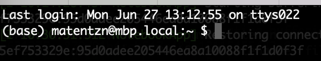

Tutorial: Very (!) short introduction to the command line for ontology curators and semantic engineers: Part 1¶
As a modern ontology curator, you are an engineer - you are curating computable knowledge, testing the integrity of your curation using quality control testing, and are responsible for critical components of modern knowledge systems that directly affect user experience - the ontologies.
Scientific computing is a big, scary world comprising many different tools, methodologies, training resources and philosophies, but nearly all modern workflows share one key aspect: the ability to execute commands that help you find and manipulate data with the command line. Some examples of that include:
- Running and Ontology Development Kit (ODK) commands like
sh run.sh make prepare_release - Creating a new branch in
gitand committing changes - Downloading a file with
curlorwget - Finding which file in my ontology repository mentions HP:0000118 to figure out where that "weird axiom is coming from"
- Searching for strange symbols in the ontology
- Filtering and sorting text files
Here we are doing a basic hands on tutorial which will walk you through the must-know commands. For a more comprehensives introduction into thinking about automation please see our lesson on Automating Ontology Development Workflows: Make, Shell and Automation Thinking
The tutorial uses example tailored for users of UNIX systems, like Mac and Linux.
Users of Windows generally have analogous steps - wherever we talk about an sh file in the following
there exists a corresponding bat file that can be run in the windows powershell, or CMD.
Prerequisites¶
You have:
- a Mac or Linux Operating system
- alternatively, you have the Ontology Development Kit installed and learned how to "get inside a running container".
Tutorial¶
- Baby steps: whoami, ls and cd
- Working with files and directories
- Downloading and searching files
- The Dark Art of Piping and Redirects
- Tutorial videos
- Further reading
Baby steps: whoami, pwd and ls¶
We are not going to discuss here in any detail what the command line is. We will focus on what you can do with it: for more information skip to the further reading section.
The basic idea behind the command line is that you run a command to achieve a goal. Among the most common goals relevant to you as a semantic engineer will be:
- Navigating the file system (changing directories, logging into remote servers and more)
- Reading and writing files
- Searching stuff
Most commands result in some kind of printed statement. Lets try one. Open your terminal (a terminal is the program you use to enter commands. For a nice overview of how shell, terminal, command line and console relate, see here). On Mac, you can type CMD+Space to search for programs and then type "terminal". For this tutorial we use the default Terminal.app, but there are many others, including iterm2. For this introduction, it does not matter which terminal you use. When first opening the terminal you will see something like this:

or

Note that your terminal window may look slightly different, depending on your configuration. More on that later.
Let's type our first command and hit enter:
whoami
On my machine I get
(base) matentzn@mbp.local:~ $ whoami
matentzn
This does not seem like a useful command, but sometimes, we forget who we are, and it is good to be reminded. So, what happened here? We ran a command, named whoami and our command line executed that command which is implemented somewhere on our machine as a program. That program simply determined who I am in some way, and then printed the result again.
Ok so, lets lets look a bit closer at the command prompt itself:
matentzn@mbp.local:~ $
Two interesting things to not here for today:
- The
~. This universally (on all Unix systems) refers to your user directory on your computer. In this case here, it tells you that in your terminal, you are "in your user directory". - The
$sign. It simply denotes where your command line starts (everything before the $ is information provided to you, everything will be about your commands). Make sure that you do not accidentally copy based the$sign from the examples on the web into your command prompt:
(base) matentzn@mbp.local:~ $ $ whoami
-bash: $: command not found
(base) matentzn@mbp.local:~ $
whoami did not do anything.
Ok, based on the ~ we know that we are "in the user home directory". Let as become a bit more confident about that and ask the command prompt where we are:
matentzn@mbp.local:~ $ pwd
/Users/matentzn
The pwd command prints out the full path of our current location in the terminal. As you can see, the default location when opening the command prompt is, indeed, the home director, located in /Users/matentzn. We will use it later again.
A word about paths. /Users/matentzn is what we call a path. On UNIX systems, / separates one directory from another. So matentzn is a directory inside of the Users directory.
Let us now take a look what our current directory contains (type ls and hit enter):
matentzn@mbp.local:~ $ ls
Applications Library ...
This command will simply list all of the files in your directory as a big list. We can do this a bit nicer:
matentzn@mbp.local:~ $ ls -l
total 80000
drwx------@ 4 matentzn staff 128 31 Jul 2020 Applications
drwx------@ 26 matentzn staff 832 12 Sep 2021 Desktop
-l is a short command line option which allows you specify that you would like print the results in a different format (a long list). We will not go into any detail here what this means but a few things to not in the output: You can see some pieces of information that are interesting, like when the file or directory was last modified (i.e. 31. July 2020), who modified it (me) and, of course, the name e.g. Applications.
Before we move on to the next section, let us clear the current terminal from all the command outputs we ran:
clear
Your command prompt should now be empty again.
Working with files and directories¶
In the previous section we learned how to figure out who we are (whoami), where we are (pwd) and how to see what is inside the current directory (ls -l) and how to clear all the output (clear).
Let us know look at how we can programmatically create a new directory and change the location in our terminal.
First let us create a new directory:
mkdir tutorial-my
Now if we list the contents of our current directory again (ls -l), we will see our newly created directory listed! Unfortunately, we just realised that we chose the wrong name for our directory! It should have been my-tutorial instead of tutorial-my! So, let us rename it. In the command prompt, rather than "renaming" files and directories, we "move" them (mv).
mv tutorial-my my-tutorial
Now, lets enter our newly created directory using the _c_hange _d_irectory command (cd), and create another sub-directory in my-tutorial, called "data" (mkdir data):
cd my-tutorial
mkdir data
You can check again with ls -l. If you see the data directory listed, we are all set! Feel free to run clear again to get rid of all the current output on the command prompt.
Let us also enter this directory now: cd data.
If we want to leave the directory again, feel free to do that like this:
cd ..
The two dots (..) mean: "parent directory." This is very important to remember during your command line adventures: .. stands for "parent directory", and . stands for "current/this directory" (see more on that below).
Now, let's get into something more advanced: downloading files.
Downloading and searching files¶
Our first task is to download the famous Human Phenotype Ontology Gene to Phenotype Annotations (aka HPOA). As you should already now, whenever we download ontologies, or ontology related files, we should always use a persistent URL, if available! This is the one for HPOA: http://purl.obolibrary.org/obo/hp/hpoa/genes_to_phenotype.txt.
There are two very popular commands for downloading content: curl and wget. I think most of my colleagues prefer curl, but I like wget because it simpler for beginners. So I will use it here. Lets us try downloading the file!
wget http://purl.obolibrary.org/obo/hp/hpoa/genes_to_phenotype.txt -O genes_to_phenotype.txt
The -O parameter is optional and specifies a filename. If you do not add the parameter, wget will try to guess the filename from the URL. This does not always go so well with complex URLs, so I personally recommend basically always specifying the -O parameter.
You can also use the curl equivalent of the wget command;
curl -L http://purl.obolibrary.org/obo/hp/hpoa/genes_to_phenotype.txt --output genes_to_phenotype.txt
Try before reading on: Exercises!
- Move the downloaded file
genes_to_phenotype.txtto the data directory you previously created. - Change into the
datadirectory. - Download the OBO format version of the Human Phenotype Ontology from its PURL.
Do not move on to the next step unless your data directory looks similar to this:
matentzn@mbp.local:~/my-tutorial/data $ pwd
/Users/matentzn/my-tutorial/data
matentzn@mbp.local:~/my-tutorial/data $ ls -l
total 53968
-rw-r--r-- 1 matentzn staff 19788987 11 Jun 19:09 genes_to_phenotype.txt
-rw-r--r-- 1 matentzn staff 7836327 27 Jun 22:50 hp.obo
Ok, let us look at the first 10 lines of genes_to_phenotype.txt using the head command:
head genes_to_phenotype.txt
head is a great command to familiarise yourself with a file. You can use a parameter to print more or less lines:
head -3 genes_to_phenotype.txt
This will print the first 3 lines of the genes_to_phenotype.txt file. There is another analogous command that allows us to look at the last lines off a file:
tail genes_to_phenotype.txt
head, tail. Easy to remember.
Next, we will learn the most important of all standard commands on the command line: grep. grep stands for "Global regular expression print" and allows us to search files, and print the search results to the command line. Let us try some simple commands first.
grep diabetes genes_to_phenotype.txt
You will see a list of hundreds of lines out output. Each line corresponds to a line in the genes_to_phenotype.txt file which contains the word "diabetes".
grep is case sensitive. It wont find matches like Diabetes, with capital D!
Use the `-i` parameter in the grep command to instruct grep to
perform case insensitive matches.
There is a lot more to grep than we can cover here today, but one super cool thing is searching across an entire directory.
grep -r "Elevated circulating follicle" .
Assuming you are in the data directory, you should see something like this:
./genes_to_phenotype.txt:190 NR0B1 HP:0008232 Elevated circulating follicle stimulating hormone level - HP:0040281 orphadata ORPHA:251510
./genes_to_phenotype.txt:57647 DHX37 HP:0008232 Elevated circulating follicle stimulating hormone level - - mim2gene OMIM:273250
...... # Removed other results
./hp.obo:name: Elevated circulating follicle stimulating hormone level
There are two new aspects to the command here:
- The
-roption ("recursive") allows is to search a directory and all directories within in. - The
.in the beginning. Remember, in the previous use of thegrepcommand we had the name of a file in the place where now the.is. The.means "this directory" - i.e. the directory you are in right now (if lost, rememberpwd).
As you can see, grep does not only list the line of the file in which the match was found, it also tells us which filename it was found in!
We can make this somewhat more easy to read as well by only showing filenames using the -l parameter:
matentzn@mbp.local:~/my-tutorial/data $ grep -r -l "Elevated circulating follicle" .
./genes_to_phenotype.txt
./hp.obo
The Dark Art of Piping and Redirects¶
The final lesson for today is about one of the most powerful features of the command line: the ability to chain commands together. Let us start with a simple example (make sure you are inside the data directory):
grep -r "Elevated circulating follicle" . | head -3
This results in:
./genes_to_phenotype.txt:190 NR0B1 HP:0008232 Elevated circulating follicle stimulating hormone level - HP:0040281 orphadata ORPHA:251510
./genes_to_phenotype.txt:57647 DHX37 HP:0008232 Elevated circulating follicle stimulating hormone level - - mim2gene OMIM:273250
./genes_to_phenotype.txt:57647 DHX37 HP:0008232 Elevated circulating follicle stimulating hormone level - HP:0040281 orphadata ORPHA:251510
So, what is happening here? First, we use the grep command to find "Elevated circulating follicle" in our data directory. As you may remember, there are more than 10 results for this command. So the grep command now wants to print these 10 results for you, but the | pipe symbol intercepts the result from grep and passes it on to the next command, which is head. Remember head and tail from above? Its exactly the same thing, only that, rather than printing the first lines of a file, we print the first lines of the output of the previous command. You can do incredible things with pipes. Here a taster which is beyond this first tutorial, but should give you a sense:
grep "Elevated circulating follicle" genes_to_phenotype.txt | cut -f2 | sort | uniq | head -3
Output:
AR
BNC1
C14ORF39
What is happening here?
grepis looking for "Elevated circulating follicle" in all files in the directory, then "|" is passing the output on tocut, which extracts the second column of the table (how cool?), then "|" is passing the output on tosort, which sorts the output, then "|" is passing the output on touniq, which removes all duplicate values from the output, then "|" is passing the output on tohead, which is printing only the first 3 rows of the result.
Another super cool use of piping is searching your command history. Try running:
history
This will show you all the commands you have recently run. Now if you want to simply look for some very specific commands that you have run in the past you can combine history with grep:
history | grep follicle
This will print every command you ran in the last hour that contains the word "follicle". Super useful if you, like me, keep forgetting your commands!
The last critical feature of the command line we cover today is the "file redirect". Instead of printing the output to file, we may chose to redirect the results to a file instead:
matentzn@mbp.local:~/my-tutorial/data $ grep "Elevated circulating follicle" genes_to_phenotype.txt | cut -f2 | sort | uniq | head -3 > gene.txt
matentzn@mbp.local:~/my-tutorial/data $ head gene.txt
AR
BNC1
C14ORF39
> gene.txt basically tells the command line: instead of printing the results to the command line, "print" them into a file which is called gene.txt.
Videos¶
Sam Bail: Intro to Terminal¶
Sam also did here PhD in and around ontologies but has moved entirely to data engineering since. I really liked her 1 hour introduction into the terminal, this should fill some of the yawning gaps in this introduction here.
Further reading¶
- Automating Ontology Development Workflows: Make, Shell and Automation Thinking
- Data Science at the Command Line: Free online book that covers everything you need to know to be a command line magician
- A whirlwind introduction to the command line by James Overton